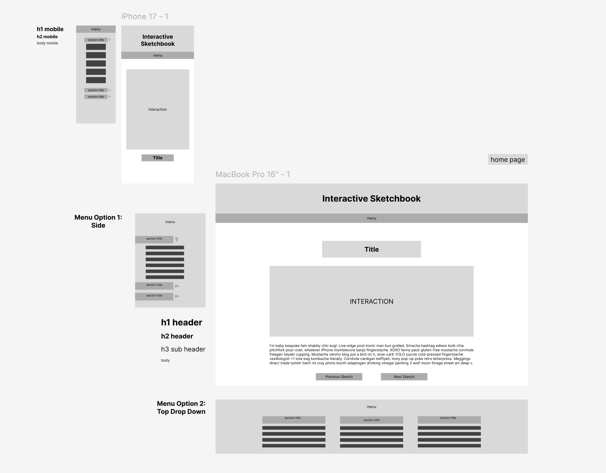

Click Here for Figma Prototype Link

To begin my wireframing, I made a mobile layout prototype which brings each interaction and micro-sketch front and center. There will be a main sketchbook heading with a drop down menu underneath, where the user can navigate through the sketchbook but it will not be in the way when the user is viewing the respective sketch. The sketches will also be displayed to fit the mobile screen, which fixes the previous issue of the sketch being cut off. Additionally, the title will appear below the sketch as opposed to above, and there will be limited added text to help clean up the space. This addresses the self audit by making the sketch more digestible for the user and only adding the necessary instruction.
For the desktop wireframe, I made the sketchbook header front and center for visual hierarchy, calling the user's eye to it immediately. The menu will be collapsible, so that it does not crowd the screen, but will hold each individual section and respective sketches or projects underneath. The interaction will be large under the title, with the instructions or description clearly listed under the interaction. This addresses the audit by making the directions immediately noticeable for the user, and will hopefully limit confusion. There will be a forward and back button at the bottom of the page, so the user can scroll through sketches without having to navigate the menu.
The prototype feels unresolved in cohesivity, and the menu will need to be altered so that the format works for each layout while still being visually consistent. I may continue to play around with the menu and whether or not it is constantly visible on the desktop screen, but for now it will live as a collapsable index. Additionally, the text styles can be expanded to include a wider variety of sections, and I may add easily navigable back buttons to easily get back to the homepage.